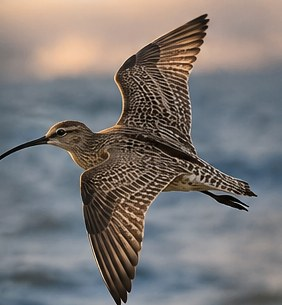
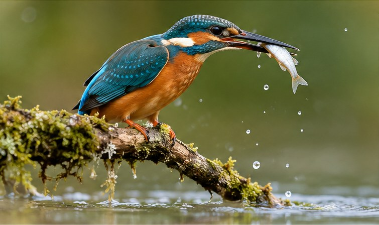

A THREE-DAY ONLINE WORKSHOP
Bird behaviour.
Better questions.
Explore what birds do, why they move, and how field observations become scientific evidence.
Begin with the koel →03learning daysInteractiveknowledge checksField-basedresearch examples

THE LEARNING PATH
Three days, step by step.
Start with concepts, explore field methods, then bring everything together in a simple research design.

Behaviour & Migration
Behavioural questions, ethograms, migration patterns and why birds migrate.
Open presentation ↗Fieldwork & Methods
Turn research questions into observations, sampling plans and field methods.
View outline ↗Research Design & Data
Build a research question and consider replication, bias and interpretation.
View outline ↗HOW IT WORKS
Made for active learning.
Each presentation has a dedicated slide viewer, navigation controls, knowledge checks and short activities. Use the arrows or the topic list to move through the material.
This public website does not collect participant names, answers or scores.